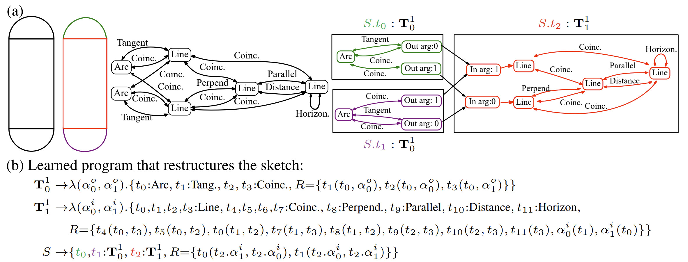
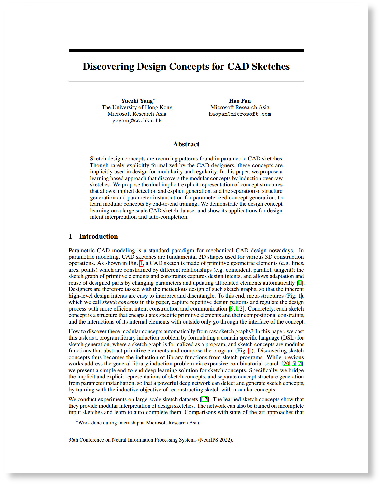

| Discovering Design Concepts for CAD Sketches |
| Yuezhi Yang1,2, Hao Pan2 |
| 1The University of Hong Kong, 2Microsoft Research Asia |
| Neural Information Processing Systems (NeurIPS 2022) |
| |
|  |
|
Concept learning from sketch graphs. (a) In black are the raw sketch and its constraint graph, with nodes showing primitives and edges depicting constraints. Colored are the restructured sketch and its modular constraint graph, where each module box represents a concept; primitives and constraint edges are colored according to the modular concepts. (b) The restructured sketch graph in our DSL program representation, where the whole sketch S is compactly constructed with three instances of two learned L1 types.
|
| Abstract |
|
Sketch design concepts are recurring patterns found in parametric CAD sketches. Though rarely explicitly formalized by the CAD designers, these concepts are implicitly used in design for modularity and regularity. In this paper, we propose a learning based approach that discovers the modular concepts by induction over raw sketches. We propose the dual implicit-explicit representation of concept structures that allows implicit detection and explicit generation, and the separation of structure generation and parameter instantiation for parameterized concept generation, to learn modular concepts by end-to-end training. We demonstrate the design concept learning on a large scale CAD sketch dataset and show its applications for design intent interpretation and auto-completion.
|
|  |
|
Paper [PDF] [Arxiv]
Code and data [Link]
Yuezhi Yang, Hao Pan. 2022. Discovering Design Concepts for CAD Sketches. Advances in Neural Information Processing Systems (NeurIPS 2022)
(bibtex)
|
|
| |
| |
| |
| |
| ©Hao Pan. Last update: Nov 15, 2022. |